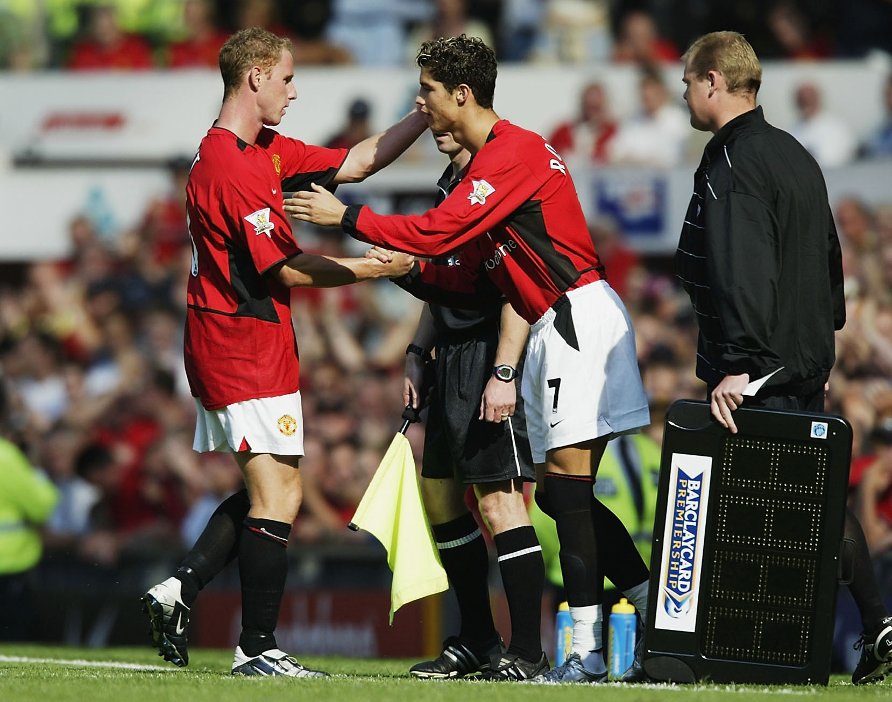
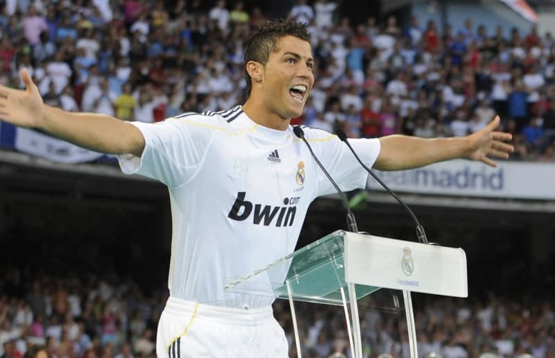

The Frist Thing About Ronaldo
The real name of him is Cristiano Ronaldo dos Santos Aveiro he came to club Manchester United in 2003 by the coach his name was Alex Ferguson .The first match he played for Manchester United in 2003 he was changed for the left-player and he played in 35 minutes left there was the picture of him in MU.

The Beginning Of Legendary At Laliga
Real Marid là cái tên mà đã có được chữ kí của siêu sao thế giới lúc bấy giờ . Mức chuyển nhượng đạt đế con số kỉ lục 94 Triệu Euro chưa từng có cầu thủ nào có mức giá khủng như là Cristiano Ronaldo. Dưới đây là hình ảnh trong ngày anh đến với Sân Santiago Bernabeu và gia nhập vào đội hình ngân hà lúc bấy giờ. Hàng 100 ngàn cổ động viên đến xem anh ra mắt.

Những Thành Tựu Khi Anh Còn Ở Real Marid
| Năm | Danh Hiệu Quả Bóng Vàng |
|---|---|
| 2013 | Cầu Thủ Xuất Sắc Thế Giới |
| 2014 | Cầu Thủ Xuất Sắc Thế Giới |
| 2016 | Cầu Thủ Xuất Sắc Thế Giới |
| 2017 | Cầu Thủ Xuất Sắc Thế Giới |
| 2018 | Cầu Thủ Xuất Sắc Thế Giới |
- More Information Ronaldo
- Caution: Contact My FB